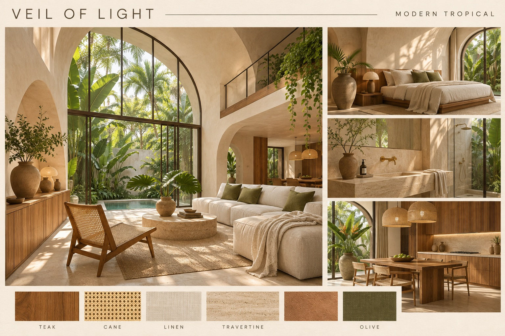

MODERN TROPICAL INTERIORS
Loading original geometry and materials…
Walls block forward movement. Vertical controls let you navigate between levels. This is an architectural explorer, not a full physics simulation.

Concept atmosphere and material direction. The playable villa preserves the original SketchUp architecture.